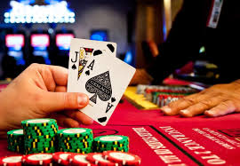
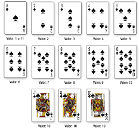

Reglas del Blackjack
El Blackjack es un juego de cartas popular en casinos que se basa en lograr una mano con un valor lo más cercano posible a 21 puntos sin pasarse. Las cartas numéricas valen su valor nominal, las cartas con figuras (J, Q, K) valen 10 puntos, y los ases pueden valer 1 o 11 puntos dependiendo de qué beneficie más al jugador.

Si la suma de las cartas excede los 21 puntos, el jugador pierde la partida automáticamente. Además, una combinación inicial de un As y una carta de 10 puntos se conoce como Blackjack, la mejor mano posible. Si un jugador obtiene esta combinación, gana automáticamente la ronda.
En el caso de empate entre el jugador y el crupier, se devuelve la apuesta al jugador. Las reglas pueden variar según el casino, pero las mencionadas son las más comunes en la mayoría de los juegos de Blackjack.
